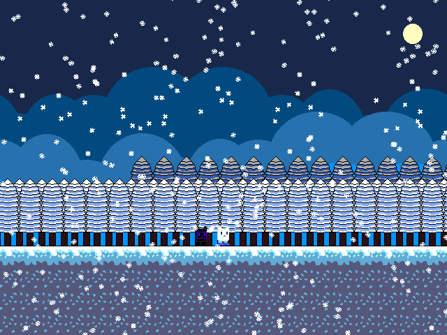

SPACEJUNK (Catco's Galaxy RUST)
About SPACEJUNK
The year is 2009...
A young cat has to save the universe from an evil calamity/kid/thing that wants to destory it! A lot of shenanigans take place along the way. From noirs, to getting harassed online, simply power won't get you through this adventure!
(game website here)Screenshots

Features
- Grid-based platforming levels that encourage exploration
- An overworld with many NPCs to talk to
- Noirs.
- An ever-evolving storyline
- cats.
Download ACT 1 (1.1.0)
NOTE: This act is only available on WINDOWS. A port to LINUX and MACOS X will come soon.